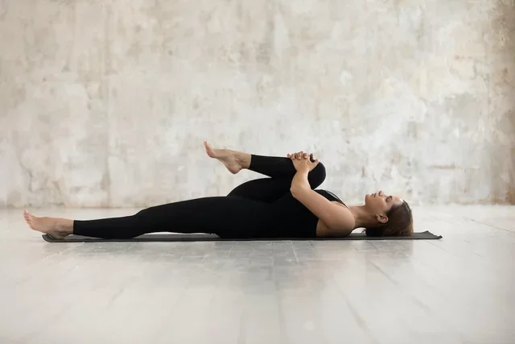
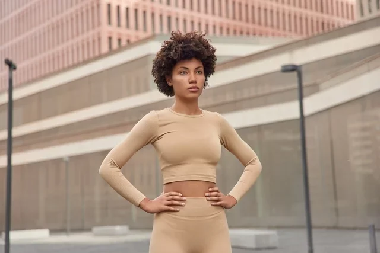

8 Alongamentos para lombar e como fazer
Os alongamentos para lombar, como os exercícios de abraçar a perna, ponte ou posição da serpente, ajudam a relaxar a musculatura, fortalecer os músculos das costas, pernas, quadris e abdominais, melhorando a mobilidade e a flexibilidade, e ajudando a corrigir a postura, prevenir lesões e a aliviar as dores lombares.
Os alongamentos podem ser realizados logo de manhã, durante uma pausa no trabalho, para aliviar a tensão muscular, ou à noite, ao deitar, para ir dormir mais relaxado, devendo-se respeitar os limites do corpo para não causar dor ou desconforto na lombar.
Estes exercícios não devem ser realizados por pessoas que tenham alguma lesão ou dor intensa na região lombar ou que tenham sido recentemente submetidos a uma cirurgia, devendo sempre consultar o ortopedista para que seja feita uma avaliação e indicação do tratamento mais adequado.
Os alongamentos para lombar podem ser realizados deitados sobre um tapetinho de ginástica ou no chão, ou ainda de pé. O ideal é consultar o educador físico ou fisioterapeuta antes de iniciar os exercícios de alongamento para realizar da forma correta e evitar o surgimento de lesões.
Algumas opções de alongamentos para lombar são:
1. Alongamento da coxa

O alongamento da coxa permite alongar o músculo da parte de trás da coxa, além da panturrilha e pé, ajudando a fortalecer a musculatura da perna e reduzir a pressão sobre a lombar.
Como fazer:deitar de barriga para cima, deixando as pernas e os braços esticados por cerca de 10 segundos. Em seguida, dobrar uma perna e manter a outra esticada. Elevar a perna esticada, com o auxílio de uma toalha apoiada, um cinto ou uma faixa elástica, na base do pé e trazer a perna esticada o máximo possível em direção ao peito, mantendo essa posição durante cerca de 30 segundos e repetir o mesmo com a outra perna.
2. Abraçar a perna
O abraço da perna deve ser feito deitado, permitindo alongar os músculos da lombar, além do glúteo e coxas, melhorando a flexibilidade e aumentando a amplitude dos movimentos.
Como fazer:deitar de barriga para cima e dobrar os joelhos mantendo os pés no chão, ou deixando uma perna esticada. Com a ajuda das mãos, trazer um joelho em direção ao peito, mantendo essa posição por cerca de 15 segundos. Fazer o mesmo com a outra perna, repetindo o movimento por 2 vezes em cada perna.
3. Postura da borboleta

A postura da borboleta permite alongar os músculos das costas e pernas, e aliviar a tensão na lombar. No entanto, esse alongamento não deve ser feito caso a pessoa tenha dor intensa na lombar ou dor nos joelhos.
Como fazer: deitar de barriga para cima e dobrar os joelhos mantendo os pés no chão. Afastar os joelhos levemente para fora, girando os pés de forma a conseguir juntar as plantas dos pés, afastando os joelhos o máximo que se conseguir, e aguentar 10 segundos. Relaxar e repetir 5 vezes. Esta posição pode causar um ligeiro desconforto, porém, se a pessoa sentir dor, deve evitar afastar tanto os joelhos.
4. Ponte

A ponte ajuda a estabilizar e fortalecer os músculos do core que sustentam e estabilizam a coluna, trabalhando a lombar, os glúteos, o quadril e o abdômen.
Como fazer: deitar de barriga para cima, com os braços alinhados com o corpo, dobrar os joelhos e apoiar os pés no chão com os calcanhares alinhados ao joelho. Contrair o abdômen e os glúteos e elevar o quadril do chão até que o corpo forme uma linha reta dos joelhos à cabeça. Manter essa posição por 5 a 10 segundos e abaixar o quadril. Relaxar e repetir o exercício por 5 vezes.
5. Posição da serpente
A posição da serpente permite alongar e fortalecer os músculos da parte inferior das costas, ajudando a prevenir a dor na lombar.
Como fazer: deitar de barriga para baixo, esticando os pés, deixando-os alinhados à coluna. Colocar as palmas das mãos no chão, na altura do peito e esticar os braços, empurrando o chão e elevando o tronco para cima. Manter os braços esticados, olhando sempre para frente e com o pescoço paralelo ao chão. Durante esse alongamento é importante manter os quadris e o abdômen contraídos. Manter a posição por 30 segundos e repetir por 4 vezes
6. Superman

O exercício do superman simula a posição do voo do super-homem e trabalha o fortalecimento da região lombar, além dos músculos do abdômen, glúteos, quadris, posteriores da coxa e ombros, melhorando a postura e a flexibilidade.
Como fazer: deitar no chão com a barriga para baixo, com as pernas esticadas, braços estendidos acima da cabeça e palma das mãos voltadas para baixo. Contrair o abdômen, os glúteos e a coluna lombar. Elevar os braços e as pernas para trás, como se fosse voar. É importante que a cabeça fique alinhada com a coluna e, por isso, é importante manter o olhar no chão. Além disso, a elevação das pernas e braços não deve exceder 20 cm do chão. Manter essa posição por 2 a 5 segundos e voltar à posição inicial. Repetir esse movimento por 1 minuto.
7. Postura do gato
A postura do gato permite alongar os músculos das costas, quadris, abdômen e tórax, melhorando a flexibilidade da coluna lombar, além do pescoço e ombros.
Como fazer: no chão, ficar na posição de 4 apoios, com os joelhos separados na largura dos quadris e os pulsos alinhados com os ombros. Arquear as costas como se fosse um gato, inspirando e olhando para cima. Ao expirar, mover as costas para cima, curvando-a e olhando para baixo em direção ao umbigo. Manter essa posição por 15 a 30 segundos e retornar à posição inicial e repetir o movimento por 2 a 4 vezes.
8. Rotação dos quadris
A rotação dos quadris permite melhorar a flexibilidade da coluna e quadris, reduzir a rigidez e dando mais estabilidade para o corpo.
Como fazer: de pé, com os pés separados, na largura dos ombros, posicionar as mãos na cintura. Lentamente, girar o quadril para a esquerda, frente e direita e para trás e repetir novamente. Em seguida, repetir os movimentos no sentido contrário, para a direita, frente, esquerda e para trás. Repetir novamente o movimento nos dois sentidos por 2 vezes.